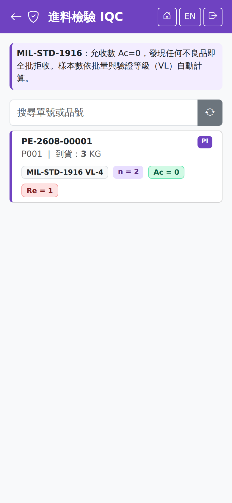

進料檢驗 IQCIncoming Inspection (IQC)
列出待 IQC 的進料單。桌機確認進貨單後，需檢驗的品號會產生檢驗單並出現在這裡；檢驗合格後該批才會出現在入庫上架的待入庫清單。同樣採 MIL-STD-1916 Ac=0，發現任何不良品即全批拒收。Lists the receipts awaiting IQC. When a goods receipt is confirmed on the desktop, products that need inspecting raise an inspection order and appear here; the lot reaches the put-away list only once it passes. It also uses MIL-STD-1916 with Ac=0, so any defect rejects the whole lot.

一般進貨在確認後、以及已上架到待驗倉但還沒檢驗時都會列出；合格後轉入進貨單記錄的倉儲，沒有就用品號類別的預設倉儲，兩者都沒有時判合格會被擋下。清單除了一般進貨，也列出委外收貨的收回品（標「委外」）。委外收回品合格後會自動轉入一般倉（收貨單記錄的倉儲，沒有就用品號類別的預設倉儲），並累計到委外派工的完工量；不合格的留在待驗倉待處置。兩者都沒有時判合格會被擋下並說明、不會記錄這筆檢驗——先到產品類別設定預設倉儲再驗。Purchase receipts are listed once confirmed, and also after they have been put away into quarantine but not yet inspected; on acceptance they move to the warehouse on the receipt, or the item category's default when there is none, and acceptance is refused if neither is set. Besides ordinary purchase receipts, the list also shows goods returned on outsource receipts (marked "Outsource"). When they pass they are moved to a normal warehouse automatically (the warehouse on the receipt, otherwise the product category default) and added to the outsourced dispatch's completed quantity; failed quantities stay in quarantine awaiting disposition. If there is neither, a pass is refused with an explanation and the inspection is not recorded — set a default warehouse under Product Categories and inspect again.
操作步驟Steps
實際抽取數必須大於 0，否則會提示「抽樣數量必須大於 0」。The actual sample quantity has to be greater than zero, otherwise it warns that it must be.
驗證等級（VL）怎麼選Choosing the verification level
驗證等級決定抽樣數：等級越高抽得越多，適用於越關鍵的零件。The verification level decides how many pieces you sample: the higher the level the larger the sample, for the more critical parts.
| 等級Level | 適用Use for |
|---|---|
| VL-IVL-I | 最寬鬆，樣本最少。The least strict, with the smallest sample. |
| VL-IVVL-IV | 一般 IQC 的建議值，未特別指定時用這一級。The recommended default for ordinary IQC; use this unless told otherwise. |
| VL-VIVL-VI | 關鍵零組件。Critical components. |
| VL-VIIVL-VII | 安全件，抽樣最嚴格。Safety-critical parts, with the strictest sampling. |
VL-II、VL-III、VL-V 亦可選用，強度介於上表之間。VL-II, VL-III and VL-V are also available, with strictness between those above.
判定結果The verdict
| 結果Result | 後續What happens next |
|---|---|
| 合格Pass | 該批放行，出現在入庫上架的待入庫清單，可以上架進良品倉。The lot is released and appears in the put-away list, ready to go into the good-stock warehouse. |
| 不合格Fail | 全批拒收，不會進入待入庫清單。後續的不合格品處置（退貨、特採、重工）由品保在桌機的 NCR 畫面處理。The whole lot is rejected and never reaches the put-away list. What happens to it next — return, concession or rework — is decided by QA on the NCR screen on the desktop. |